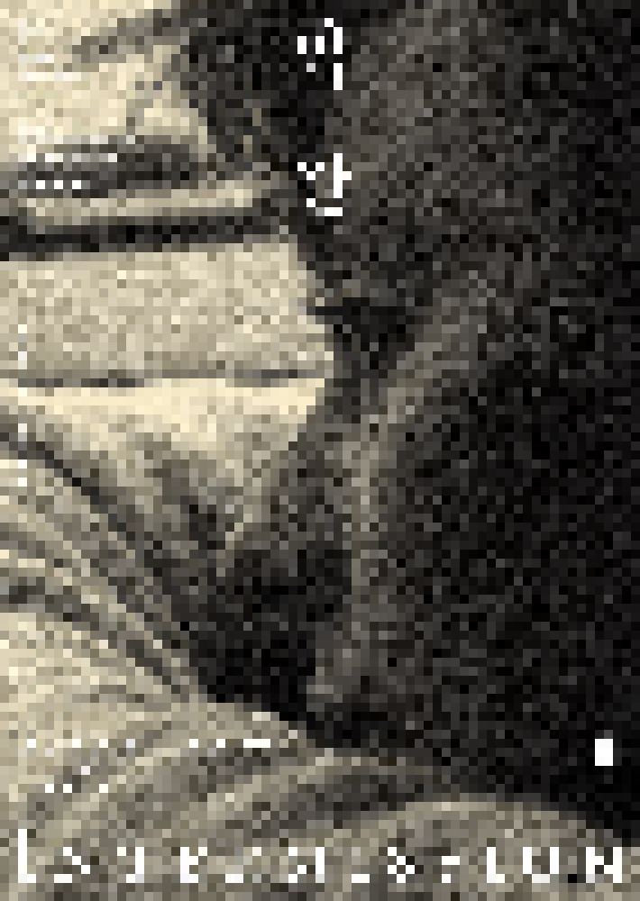

> title
2020막간
> content
‘막간’은 국립현대미술관 필름앤비디오의 정규 프로그램 사이에 소개되는 단기 프로그램으로 관객에게 호평을 받은 작품을 다시 감상할 수 있는 기회를 제공합니다. 2014년부터 시작된 ‘막간’은
지금까지 우디 알렌, 켄
로치, 다르덴 형제, 고레에다 히로카즈, 장 뤽 고다르, 장률, 지아장커 등의 작품을 상영했습니다. 《2020막간》은 금년 봄을 위해 기획됐으나, 사회적 거리두기를 위한 미술관 휴관으로 겨울의
초입에서 선보이게
되었습니다.
《2020막간》은 현재 우리에게 새롭게 해석되는 단어인 ‘일상’에 주목합니다. 이전에는 일상보다 특별한 사건과
축제 같은 순간을 꿈꾸었다면, 지금의 우리는 평범해서 기억조차 못할
하루하루의 시간들을 그 어느 때보다도
열렬히 소망합니다. 나의 일상, 가족의 일상, 일상다반사가 먼 미래에 놓인 지금, 여기 세 예술가가 남긴 일기 혹은 스케치와 같은 영화들을 소개합니다.
먼저 필립 가렐의 작품 중에서 <내부의 상처>, <비밀의 아이>, <그녀는 조명등 아래서 그토록 많은 시간을 보냈다...>와 요나스 메카스의 작품 <월든(일기, 노트, 스케치)>,
<로스트 로스트 로스트>, <행복한 삶의 기록에서 삭제된 부분> 등 각각 3편이 소개됩니다. 이 두 작가는 전시《필립 가렐: 찬란한
절망》(2015.11.25.~2016.2.28.), 《요나스 메카스: 찰나,
힐긋, 돌아보다》(2017.11.18.~2018.3.4.) 및 회고전 상영 프로그램으로 자세히 소개된 반면, 앤 샬롯 로버트슨은 재작년의 상영 프로그램
《디어 시네마2: 앤
샬롯 로버트슨》(2018.6.6.~6.10)에서 짧은 기간 소개되어 특히 아쉬움을 많이 남겼습니다. 작가의 삶의 터전을 중심으로 수십 년에 걸쳐 자신의
얼굴과 신체의 변화,
주변 사람들과의 관계에 대한 고민과 내밀한 감정을 일기처럼 기록한 ‘필름 다이어리’인 <5년간의 일기> 중에서 6편의 릴이 상영될 예정입니다.
침대에 누워 잠을 자고 뒤척이는 연인들, 행복으로 빛나는 만남의 순간 혹은 지리멸렬한 상황에 대한 환멸과 고통, 매일 마시는 차 한 잔의 온기와
위안… 이 영화들을
통해 우리는 삶을 채우는 것이 무엇인지, 예술이 우리 삶에 있어 어떤 의미를 갖는지 다시금 생각해볼 수 있을 것입니다.
